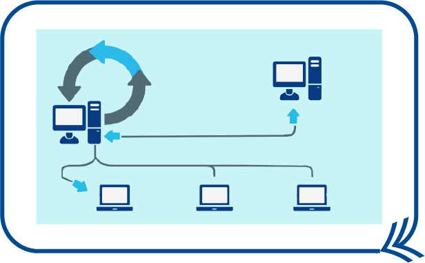
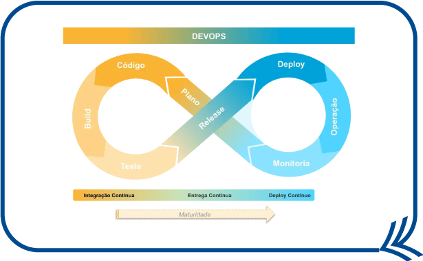
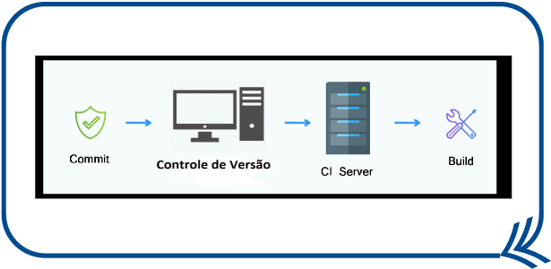
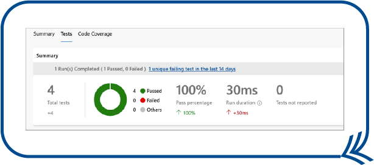
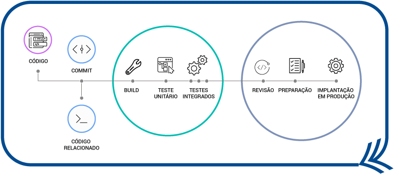

Como sugestão, configure a opção de leitura de caracteres e de pontuação de seu leitor de tela para o grau máximo de leitura, a fim de que os códigos disponibilizados neste material sejam lidos corretamente. No caso do NVDA (NonVisual Desktop Access), para localizar a opção Grau de pontuação/símbolos, acesse Preferências – Configurações – Fala. Altere o padrão Pouco para Tudo. Dessa forma, o leitor passará a ler os segmentos de código em sua totalidade.
A integração contínua, mais comumente referenciada como CI (continuous integration), envolve a organização do processo de desenvolvimento de software por meio de práticas que minimizam a duração do esforço em cada nova integração do sistema, ou seja, ao processo de atualização de código ou inclusão de novos recursos na aplicação. Em razão disso, a integração contínua torna-se uma prática eficiente no time de desenvolvimento para poder entregar a qualquer momento uma versão adequada do produto.
O termo “integração contínua” também é definido como uma das práticas ágeis do XP (extreme programming). Para a utilização em um projeto, não é necessária a implementação da metodologia XP, pode-se apenas utilizar a integração contínua.
Clique ou toque para ampliar.
Figura 1 – Representação da integração contínua
Fonte: Mundo DevOps (2018)
Computador com um símbolo de ciclo acima dele e ligado a outros computadores.
Uma das principais vantagens em utilizar a integração contínua em um projeto é o melhor aproveitamento de tempo, considerando que os integrantes do time “caçam” bugs, principalmente em códigos que vários desenvolvedores trabalham, já que nessas situações o código está sempre sendo atualizado e não se percebe de forma fácil o bug gerado pela integração com outros códigos.
Com a integração contínua, os desenvolvedores têm mais autonomia no desenvolvimento do código. Logo, quando estiver pronto para mesclar com o produto final, ocorrerão menos bugs em comparação a um projeto que não utiliza a CI. A integração contínua possibilita, assim, identificar conflitos com antecedência e organizar melhor a gestão do tempo durante o ciclo de desenvolvimento do software.
Dentro de um time de desenvolvimento, o responsável pela boa implantação da integração contínua é o DevOps. Essa sigla vem de Dev (desenvolvimento) e Ops (operações). O DevOps permite que funções aparentemente isoladas, como time de segurança, desenvolvimento, qualidade e outros, atuem de uma maneira organizada e colaborativa.
A entrega contínua (continuous delivery) e a implantação contínua (continuous deployment) são comumente abreviadas com o uso da sigla CD. Esses dois processos lidam com as melhores práticas da entrega da aplicação, assim como a sua instalação no cliente.
Por se tornar um ciclo com a integração contínua, ou seja, o ciclo de entrega (continuous delivery – CD), implantação ou instalação do sistema (continuous deployment – CD), e a atualização da aplicação (continuous integration – CI), tem-se a utilização do termo “CI/CD” para indicar essa estreita relação entre essas etapas.
Na entrega contínua, indica-se que, a cada novo código adicionado na aplicação, ficará garantido que este possa entrar em ambiente de produção do cliente a qualquer momento, sem causar problemas, ou seja, poderá entrar no sistema que já está sendo utilizado pelo cliente ou pelos usuários. Para uma boa entrega contínua, deve-se implementar uma automação de processo de lançar o código e de testes.
Já o termo “implantação contínua” refere-se ao ciclo final de entrega e indica uma integração de forma automática do ambiente de desenvolvimento com o ambiente de produção, sendo um complemento da entrega contínua. Há, ainda, nessa etapa de implantação, uma automatização de processos.
Como já mencionado, o profissional DevOps acaba sendo o principal responsável pelo gerenciamento de todo esse ciclo CD/CI.
Clique ou toque para ampliar.
Figura 2 – Ciclo de pilares da atuação de um DevOps
Fonte: Mamede (2018)
Imagem de um símbolo do infinito representando a relação entre integração contínua, entrega contínua e deploy contínuo. Na imagem são definidas, dentro do símbolo do infinito, as palavras ‘plano”, ou seja, planejamento da aplicação, “código”, “build” e “teste” (estas são indicadas, na imagem, relacionadas à integração contínua). Após isso, continua com as palavras “release” e “deploy” (fazendo parte da entrega contínua) e as palavras “operação” e “monitoria” (relacionadas com implantação contínua). Todos esses processos são indicados na imagem como sendo de responsabilidade do DevOps.
A integração contínua, na prática do desenvolvimento de software, inicia quando o desenvolvedor cria um pull request, indicando ao CI alterações nos códigos que estão prontos para integração na branch.
Após essa etapa, o código é validado por meio de uma base de teste e, dependendo dos resultados, são realizados ajustes ou se dá sequência para a implantação da atualização do software em produção. É possível descrever esse processo nas seguintes etapas:
Clique ou toque para visualizar o conteúdo.
A utilização desse software apoia na resolução de conflitos, quando vários desenvolvedores trabalham ao mesmo tempo em um único código.
Esta etapa começa com a geração de um build definido por um pacote da versão de lançamento da aplicação. Esses builds são entregues aos usuários finais por meio de processos automatizados por scripts, que geram continuamente novos pacotes, que representam um conjunto de arquivos necessários para rodar a aplicação. Ou seja, sempre que um novo código é mesclado, a ramificação principal de produção de novos conjuntos de arquivos é gerada e compactada em um único local para a entrega da nova versão da aplicação. Após a geração desse build, é realizada a etapa de implementação, deixando-o disponível para uso em um servidor ou repositório.
Clique ou toque para ampliar.
Figura 3 – Ciclo de criação de um build
Fonte: Sharma (2023)
Imagem mostrando o ciclo do CI, que inicia com a etapa do commit; seguido de controle de versão para indicar a etapa de versionamento; depois o termo “CI server” para indicar a integração contínua; e, por fim, a palavra “build”, que representa o pacote final gerado da aplicação.
Durante o desenvolvimento da aplicação, são gerados testes para validar o código, visando garantir que ele não ocasione nenhum problema à versão de produção em uso pelo cliente ou pelo usuário. Esses casos de testes podem ser criados com base em ferramentas específicas de automação de teste. Quando se utiliza o CI, os testes são executados de forma automática cada vez que há uma mudança e enviados à branch principal.
Clique ou toque para ampliar.
Figura 4 – Teste automatizado no Azure DevOps
Fonte: Microsoft (2022)
Imagem mostrando números relacionados à aprovação do código em um teste.
Caso seja verificada a falha em um único teste, a equipe deve prontamente realizar a manutenção para liberar o código da aplicação o mais rápido possível.
Pode-se utilizar, em paralelo, ferramentas de integração contínua com um servidor de CI, que automatiza todas as etapas de testes e integração, com a geração de relatórios de controle.
Como exemplo de softwares, há o Jenkins, o BitBucket e o GitLab, que também são ferramentas de pipeline e serão descritos no próximo tópico.
Para a gestão de uma integração contínua, torna-se necessária a utilização de alguns softwares que possibilitem essa administração, bem como as automações necessárias aos processos.
Ao ciclo em que o código passa dentro das etapas de CI/CD é dado o nome de pipeline. O principal objetivo desses softwares de pipeline para CI/CD é acelerar a disponibilização do software. Essas ferramentas também podem ser encontradas na nuvem, fornecendo, além disso, automações de teste, relatórios de acompanhamento e análises de conformidades do código.
Clique ou toque para ampliar.
Figura 5 – Ciclo de pipeline gerenciado por softwares
Fonte: Matt Pieper (2023)
Imagem mostrando as etapas dos ciclos CI pipeline e CD pipeline. O ciclo inicia com o código da aplicação, seguido da etapa de commit e inclusão de códigos relacionados. Na sequência, vem um conjunto de ações do CI pipeline com a descrição dos termos “build”, “teste unitário” e “testes integrados”. Por fim, o conjunto de etapas de CD pipeline descritas com os termos “revisões”, “preparação” e “implantação em produção” do código.
A seguir, veja exemplos de softwares de pipeline.
BitBucket Pipelines
É uma ferramenta de CI/CD integrada ao sistema de controle de versão BitBucket. Assim, caso o desenvolvimento do versionamento esteja ocorrendo no BitBucket, será mais fácil utilizar e integrar a ferramenta de CI BitBucket Pipelines. Esse software também possibilita implementar em produção os builds gerados.
Clique ou toque para ampliar.
Figura 6 – BitBucket Pipeline
Fonte: BitBucket (2023)
Tela de configuração do BitBucket. Na parte da direita, indica-se uma tela com códigos gerados nas etapas da execução da pipeline, assim como a descrição de etapas dessa execução que deram certo ou falharam. Na parte esquerda, identifica-se o menu da aplicação.
Vantagens:Jenkins
Não é uma ferramenta nova. Ela já vem sendo utilizada por alguns desenvolvedores, o que garante uma boa comunidade de apoio em sua utilização. Tem código-fonte aberto, sendo feitas atualizações constantes pela comunidade. O Jenkins é uma ferramenta CI/CD com várias ferramentas de automação das principais práticas utilizadas em equipes DevOps.
Clique ou toque para ampliar.
Figura 7 – Tela do software Jenkins
Fonte: Jenkins (2023)
Tela de configuração do Jenkins. Na parte da direita, indica-se uma tela com códigos gerados nas etapas da execução da pipeline, assim como a descrição de etapas dessa execução que deram certo ou falharam. Na parte esquerda, identifica-se o menu da aplicação.
Vantagens:
Azure Pipelines
É uma ferramenta da Microsoft que combina CI/CD para testes e implantação. O Azure Pipeline faz parte de um conjunto de serviços fornecidos pelo Azure DevOps, que é um serviço também da Microsoft baseado na nuvem.
Clique ou toque para ampliar.
Figura 8 – Tela do Azure DevOps com ferramentas pipelines
Fonte: Azure DevOps (2023)
Tela de configuração do Azure DevOps. Na parte da direita, indica-se uma tela com códigos gerados nas etapas da execução da pipeline, assim como a descrição de etapas dessa execução que deram certo ou falharam. Na parte esquerda, identifica-se o menu da aplicação.
Vantagens:
GitLab
É uma ferramenta recente no mercado. Ela oferece uma ótima experiência aos DevOps para CI/CD. O objetivo do GitLab é oferecer uma melhor experiência junto ao GitHub. Ele tem também uma ferramenta de verificação de vulnerabilidades de segurança presentes no código.
Clique ou toque para ampliar.
Figura 9 – Tela do GitLab com ferramentas pipelines
Fonte: GitLab (2023)
Tela de configuração do GitLab. Na parte da direita, indica-se uma tela com códigos gerados nas etapas da execução da pipeline, assim como a descrição de etapas dessa execução que deram certo ou falharam. Na parte esquerda, identifica-se o menu da aplicação.
Vantagens:
Foi demostrada, ao longo deste conteúdo, a importância da utilização de CI/CD. Você viu que as ferramentas de apoio ao uso de CI/CD são amplamente utilizadas no mercado e possibilitam gerar uma pipeline de fácil utilização e manutenção pela equipe de desenvolvimento ou pelo DevOps.
Você ainda estudou os cuidados que o desenvolvedor deve ter em seu dia a dia, que vão desde a utilização de versionamento de software até o uso de testes que garantam maior segurança no momento das integrações do sistema.
Por fim, foi destacado que CI/CD envolve vários times e que, em razão dessa grande abrangência de organização, é de grande importância o papel do DevOps para apoio nas facilitações e no gerenciamento das práticas.